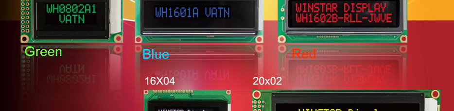
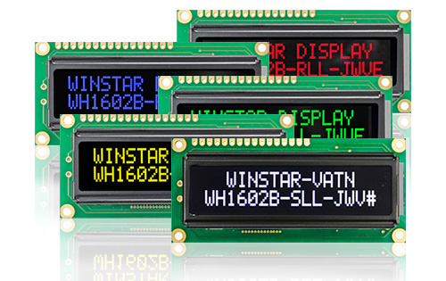

Character LCDs from 8x2 to 20x4 with a deep black background, contrast up to 120:1 and wide viewing angles. Find out how VATN works, how it compares with STN, FSTN and DFSTN, and how to choose a controller and interface.

VATN stands for Vertical Alignment Twisted Nematic. It is a liquid crystal technology for character LCDs that gives a much darker background and higher contrast than conventional STN, FSTN and even DFSTN negative mode displays. Characters appear in the colour of the LED backlight against a deep black background, and stay readable over a wide range of viewing angles.
As the authorised distributor for Winstar Display Corporation we offer VATN character modules in 8x2, 16x1, 16x2, 16x4, 20x2 and 20x4 formats, with red, green, blue, yellow-green or white backlights. The COB modules share the outlines of standard Winstar character LCDs, so VATN is a simple way to give an existing product a sharper, more modern look for only a small extra cost.
Contrast ratio up to 120:1
Viewing angle around 170° (H) and 110° (V)
Formats from 8x2 to 20x4 characters
Red, green, blue, yellow-green or white backlight
6800, SPI and I2C interfaces
Same outlines as standard character LCDs
In a conventional STN display the liquid crystal molecules lie almost flat between the glass. In a VATN display they are aligned vertically, standing upright between the two glass plates. With no voltage applied, light from the backlight passes straight through the upright molecules without being turned, so the crossed front polariser blocks it almost completely. The result is a very deep, even black background.
When the controller applies a voltage to a dot, the molecules in that dot tilt over and twist, turning the light so it passes through the front polariser. The dot lights up in the colour of the LED backlight. Because the "off" state is so dark, the difference between lit and unlit dots, the contrast ratio, can reach 120:1, and it holds up well when the display is viewed from the side.
Simplified illustration: lit dots show in the backlight colour, unlit areas stay deep black
Why designers choose VATN over STN, FSTN and DFSTN negative mode character LCDs
Contrast ratio up to 120:1, with bright characters on a truly black background rather than the dark blue or grey of STN.
Around 170° horizontal and 110° vertical, so the display stays clear when mounted low, high or off to one side.
Red, green, blue, yellow-green and white LED backlights, with a high backlight brightness to match your product styling.
COB modules share the outlines of standard character LCDs, so most designs can upgrade without mechanical changes.
6800 parallel, SPI and I2C on the RW1063 models, so you can keep an existing parallel design or save pins with a serial bus.
Four colour silk ink printing is available for custom designs, adding fixed legends, icons or logos to the display area.
STN and FSTN negative mode displays show light characters on a dark blue or grey background, and their contrast drops off quickly away from the best viewing direction. DFSTN adds a second film to give a black background and better contrast.
VATN goes a step further, with a deeper black, higher contrast and wider viewing angles than DFSTN, for only a small extra cost. Where a positive mode (dark characters on a light background) is needed, STN or FSTN remains the right choice.
| VATN | DFSTN | STN / FSTN negative | |
|---|---|---|---|
| Background | Deep black | Black | Dark blue or grey |
| Contrast | Very high, up to 120:1 | High | Moderate |
| Viewing angle | Wide, ~170° H / 110° V | Medium | Limited |
| Display mode | Negative only | Negative | Positive or negative |
| Cost | Small premium | Moderate | Lowest |
The 8x2, 16x1, 16x2 and 16x4 COB modules use the RW1063 controller, which offers 6800 parallel, SPI and I2C interfaces. The 20x2 and 20x4 modules use the ST7066 controller with the 6800 parallel interface. Both follow the familiar character LCD command set with a built-in font.
For compact designs, 16x2 COG versions with I2C are also available. Our engineers can help with interface selection, initialisation and samples.
| Interface | Data Lines | Best Suited To |
|---|---|---|
| 6800 parallel | 8 or 4 data + control | Replacing existing character LCDs |
| SPI | Serial, few wires | New designs, small MCUs |
| I2C | 2 wires, shared bus | Lowest pin count, multi-device buses |
Compare our character VATN modules by format, size, controller and interface
| Model | Format | Diagonal | Outline (mm) | Viewing Area (mm) | Controller | Interface |
|---|---|---|---|---|---|---|
| WH0802A1 | 8x2 | 1.18" | 58 x 32 | 38 x 16 | RW1063 | 6800, SPI, I2C |
| WH1601A | 16x1 | 2.36" | 80 x 36 | 66 x 16 | RW1063 | 6800, SPI, I2C |
| WH1602B | 16x2 | 2.26" | 80 x 36 | 66 x 16 | RW1063 | 6800, SPI, I2C |
| WH1604A | 16x4 | 2.36" | 87 x 60 | 62 x 26 | RW1063 | 6800, SPI, I2C |
| WH2002G | 20x2 | 2.93" | 115 x 36 | 85 x 18.6 | ST7066 | 6800 |
| WH2004A | 20x4 | 2.89" | 98 x 60 | 77 x 25.2 | ST7066 | 6800 |
Standard models: COB structure, 1/16 duty, red, green, blue, yellow-green or white LED backlight. 16x2 COG versions (WO1602J, WO1602N) with ST7028 controller and I2C also available. View Character VATN Displays →
VATN modules suit any product where a crisp, high contrast text display adds value
Uninterruptible power supplies, chargers and inverters showing status, load and battery levels.
Amplifiers, receivers and pro audio gear where a dark, premium front panel matters.
Machine controllers, PLC panels and process equipment viewed from many angles.
Meters, power supplies and instruments that need clear, high contrast readings.
Coffee machines, ovens, thermostats and alarm panels with a coloured backlight to match the design.
Customer displays, vending machines and terminals showing prices and messages.
Our engineering team can help specify or develop a custom solution for your exact requirements.
Talk to Our Engineers